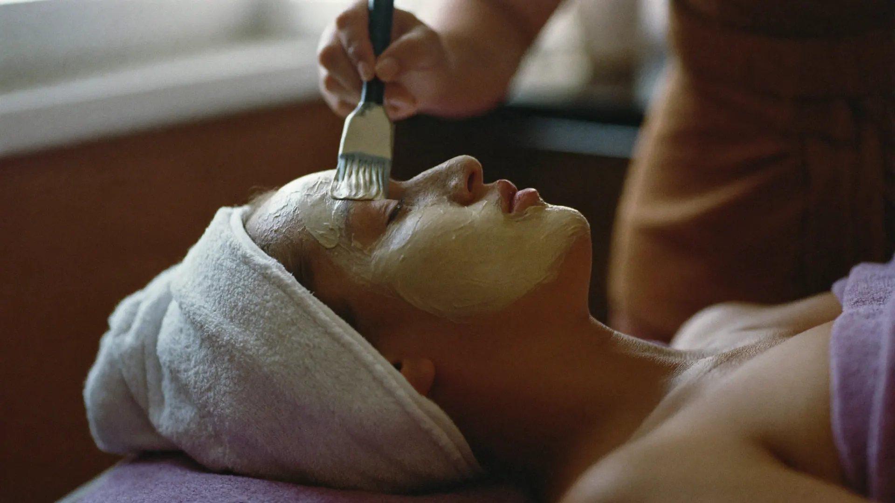
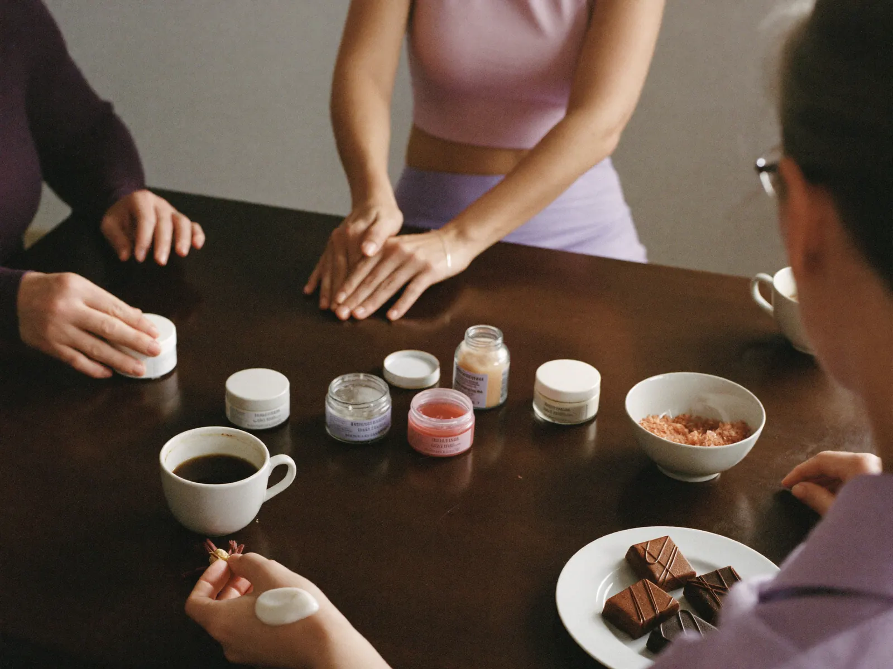
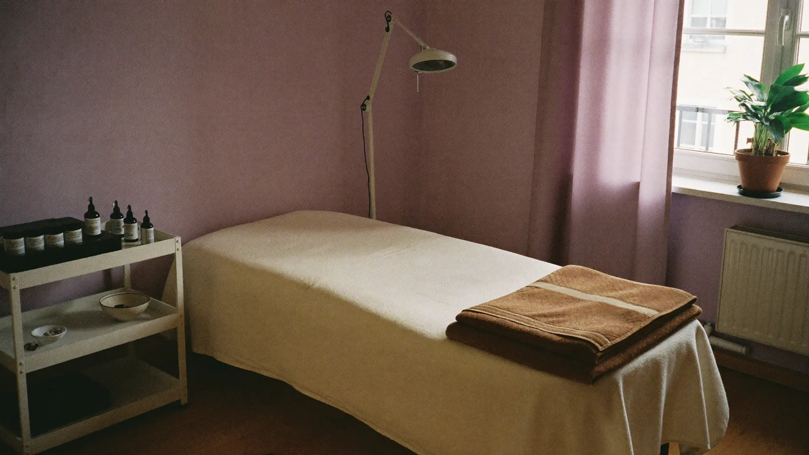
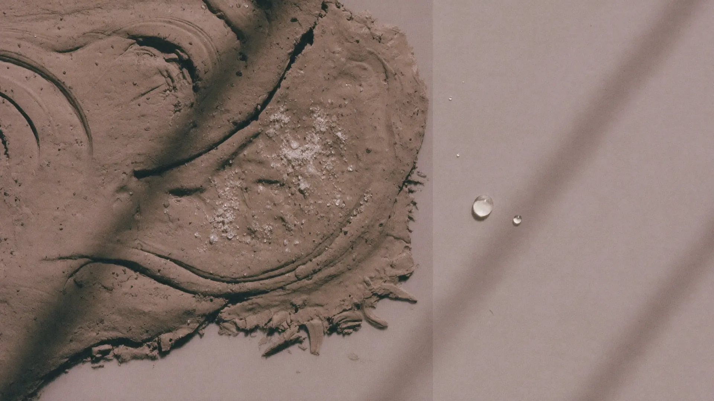

Even niets, alleen aandacht voor uw huid
Gezichtsbehandelingen, definitief ontharen en massage aan de Heideweg in Didam. Altijd één op één.
Waar kan ik u mee helpen?
Mijn huid verzorgen
Gezichtsbehandelingen van een half uur tot de uitgebreide Luxe.

Van ongewenste haartjes af
Definitief ontharen met elektrische epilatie. De intake is gratis.

Even helemaal ontspannen
Hotstone massage voor rug en nek, of een verzorgde manicure.

Iets leuks met vriendinnen
Workshops met producten uit de Dode Zee, met koffie en iets lekkers.


Nog nooit bij een schoonheidsspecialiste geweest?
Geen probleem. Zo gaat uw eerste bezoek.
Eerst kijken naar uw huid
Kitty beoordeelt uw huid en huidtype, en vraagt wat u zelf graag wilt.
Een behandeling op maat
Van een half uur tot een uitgebreide behandeling, aangevuld met ampullen of werkstoffen als uw huid dat nodig heeft.
Advies voor thuis
U krijgt geheel vrijblijvend een huidverzorgingsadvies mee. Niets hoeft.

Zouten en mineralen uit de Dode Zee
Ik werk met producten op basis van zouten en mineralen uit de Dode Zee. Ze reinigen, voeden en laten uw huid weer ademen. In de praktijk kunt u ze testen en ruiken, en ook voor thuis meenemen.
Onder andere Mineral Care, Jericho en Xminerals, met make-up van LOOkX en gellak van Gelamour.
Een middag met je vriendinnen
Testen, ruiken en persoonlijk advies, met koffie en bonbons. Vanaf twee personen.
Goed om te weten
Kan ik ook als man een behandeling krijgen?
Zeker. Een bezoek aan de schoonheidsspecialiste hoort erbij, net als de kapper. Of u nu man bent of vrouw: uw huid heeft verzorging nodig.
Wordt definitief ontharen vergoed?
Dat hangt af van uw zorgverzekering. Vraag het na bij uw verzekeraar. Het intakegesprek bij Kitty is altijd gratis.
Hoe lang duurt een behandeling?
De mini gezichtsbehandeling duurt een half uur. Een volledige of Luxe behandeling duurt langer; Kitty stemt de tijd af op wat uw huid nodig heeft.
Moet ik vooraf iets doen?
Nee. Kom zoals u bent. Bij de eerste afspraak bekijken we samen uw huid.
Hoe maak ik een afspraak?
Kitty werkt uitsluitend op afspraak. Vraag een afspraak aan via deze site, of bel en app naar 06 36107145.
Zullen we een moment plannen?
Kies uw behandeling en wanneer het u schikt. Kitty laat u weten wanneer ze tijd heeft.